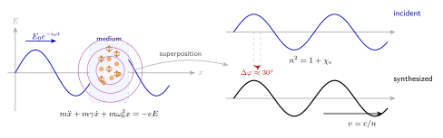

光为什么在水里会"变慢"?
上一节我们看到了光沿直线传播的几何表象. 把一束激光从空气射入静止的水面, 直线折了一下, 折射角比入射角小; 古人早在两千年前就注意到这件事. 问题是: 光为什么在水里要折? 几何光学告诉我们 Snell 定律 $n_1\sin\theta_1 = n_2\sin\theta_2$ 成立, 物理却不告诉我们 $n$ 是什么. $n$ 来自哪里? 为什么水是 $1.333$ 而玻璃是 $1.5$? 为什么红光比蓝光折得少?
更让人不安的是"光变慢"这四个字. 我们反复被告知真空光速 $c = 2.998\times 10^8\,\mathrm{m/s}$ 是宇宙的速度上限, 是相对论的根基之一; 可同一个光子进到一杯水里, 相速竟然降到 $v = c/n \approx 2.25\times 10^8\,\mathrm{m/s}$. 光子真的被"拖慢"了吗? 如果真的被拖慢, 能量去哪里了? 出了水面它又如何"恢复" $c$? 一本正经讨论这几个问题, 就要走进介质内部, 看电子如何应答.
一、把"慢"的微观机制摆出来
先抛一个看似违反直觉的论断: 在水分子之间的真空里, 光永远以 $c$ 传播. 介质不是一个粘稠的"光流体"把光子减速; 介质是一个个带电粒子构成的阵列, 每当电磁波冲进来, 这些粒子 —— 尤其是质量最轻、响应最快的电子 —— 就被电场推着振荡. 振荡电荷本身就是小小的偶极天线, 按照经典电动力学, 它们会再辐射电磁波出去. 这些次级波与未被扰动的入射波在下游叠加, 合成的净波相位比入射波稍晚, 但波形仍是正弦, 只是相当于波速变小了. 所谓"光在水里变慢", 是大量次级波与原波干涉叠加后的集体视相位速度; 单个光子在分子之间那些"空袭区"依然以 $c$ 奔跑.
这个图像由洛伦兹 (H. A. Lorentz, 1853–1928) 在十九世纪末整理成系统的电子理论. 在他之前, 惠更斯 (C. Huygens) 1678 年出版的《光论》已经用波前概念猜出"介质中光速较慢"才能导出 Snell 定律; 菲涅耳 (A. Fresnel) 1820 年代把它升级成完整的波动光学. 但真正告诉我们"为什么会慢"的, 是把光当成电磁波 (Maxwell 方程, 1865)、再把介质当成可被电场驱动的电子云 (Lorentz, 1890s) 之后的故事. 于是"折射率"这个表观常数, 就有了微观的出生证.

二、洛伦兹模型: 一颗被电场推的阻尼弹簧
把介质里每个受束缚的电子, 当作一颗弹性系绳加一点阻尼的质点. 它位移 $x$, 受到三种力:
- 电场驱动力: 电子电量 $-e$, 置于外加电场 $E(t) = E_0 e^{-i\omega t}$ 中, 受力 $-eE(t)$;
- 恢复力: 把电子束缚在原子核附近的"有效弹簧力" $-m\omega_0^2 x$, 其中 $\omega_0$ 是该振子的固有共振圆频率;
- 阻尼力: 代表能量以热、再辐射等方式耗散, 写成 $-m\gamma \dot x$, $\gamma$ 是阻尼率.
牛顿第二定律给出经典的受驱阻尼谐振子方程:
\begin{equation} m\ddot x + m\gamma\dot x + m\omega_0^2 x = -eE_0 e^{-i\omega t}. \end{equation}这里我们选择复数形式, 是因为稳态解天然地能写成同频率的复振幅, 取实部就是物理结果. 试探 $x(t) = x_0 e^{-i\omega t}$ 代入, 得到
$$ x_0 = \frac{-eE_0/m}{\omega_0^2 - \omega^2 - i\omega\gamma}. $$每个电子被推着偏离了 $x_0$ 这么远, 就有一个感生电偶极矩 $p = -e x$; 单位体积内有 $N$ 个电子, 于是极化强度 $P = -Ne\,x = \varepsilon_0 \chi_e E$. 直接读出电极化率:
$$ \chi_e(\omega) = \frac{Ne^2/(m\varepsilon_0)}{\omega_0^2 - \omega^2 - i\omega\gamma}. $$在非磁介质里, 折射率平方等于相对介电常数, 即 $n^2 = 1 + \chi_e$. 于是我们得到本节最重要的式子:
\begin{equation} n^2(\omega) - 1 \;=\; \frac{Ne^2/(m\varepsilon_0)}{\omega_0^2 - \omega^2 - i\omega\gamma}. \end{equation}式 (2) 叫洛伦兹色散公式. 实部给出实折射率 $n_R$, 决定波的相速; 虚部给出消光系数 $n_I$, 决定吸收. 真正现实的介质不是单一振子, 而是多个共振频率的加权和 $\sum_j f_j/(\omega_j^2 - \omega^2 - i\omega\gamma_j)$, 但物理图像不变 —— 每一条谱线, 都是某一束被电场驱动的小弹簧在后台工作.
三、代入数字: 水的折射率真是 1.33 吗?
把公式从空中拉到地面, 最诚实的方式是做一次数量级估算. 我们看可见光远离任何水分子共振的极端情形: 水的主要电子共振在紫外, 约 $\lambda_0 \approx 120\,\mathrm{nm}$, 对应 $\omega_0 \approx 1.6\times 10^{16}\,\mathrm{rad/s}$. 可见绿光 $\lambda = 550\,\mathrm{nm}$ 对应 $\omega \approx 3.4\times 10^{15}\,\mathrm{rad/s}$, 远小于 $\omega_0$, 阻尼 $\gamma$ 可以暂时忽略. 式 (2) 简化为
$$ n^2 - 1 \approx \frac{Ne^2/(m\varepsilon_0)}{\omega_0^2 - \omega^2}. $$水分子数密度 $n_{\text{mol}} \approx 3.3\times 10^{28}\,\mathrm{m^{-3}}$, 每分子贡献大约 $Z_{\text{eff}} \approx 8$ 个外层参与共振的电子 (4 对成键电子 + 2 对孤对, 粗估), 于是 $N \approx 2.6\times 10^{29}\,\mathrm{m^{-3}}$. 代入 $e = 1.6\times 10^{-19}\,\mathrm{C}$, $m = 9.1\times 10^{-31}\,\mathrm{kg}$, $\varepsilon_0 = 8.85\times 10^{-12}\,\mathrm{F/m}$, 粗算
$$ \frac{Ne^2}{m\varepsilon_0} \;\approx\; \frac{2.6\times 10^{29}\cdot (1.6\times 10^{-19})^2}{9.1\times 10^{-31}\cdot 8.85\times 10^{-12}} \;\approx\; 8.3\times 10^{32}\,\mathrm{s^{-2}}. $$分母 $\omega_0^2 - \omega^2 \approx (1.6\times 10^{16})^2 - (3.4\times 10^{15})^2 \approx 2.4\times 10^{32}\,\mathrm{s^{-2}}$. 两者相除得到 $n^2 - 1 \approx 3.5$, 即 $n \approx 2.1$. 比真实的 $1.33$ 偏大, 但同数量级 —— 考虑到我们用了单共振、忽略了局域场校正 (Clausius–Mossotti 关系) 以及过估了有效电子数, 这种粗估已经足够说明问题: 折射率不是天降的, 而是可以算出来的. 把实验测得的多共振振子叠加后精算, 就能得到 $1.333$.
顺手算一下水中的相速: $v = c/n = 2.998\times 10^8 / 1.333 \approx 2.249\times 10^8\,\mathrm{m/s}$. 这意味着同一束光, 若在真空中 1 秒跑约 30 万公里, 换到水里只能跑约 22.5 万公里 —— 差距恰好等于干涉滞后制造出来的"视觉减速".
四、色散、反常吸收、以及 $\omega\to 0$ 的极限
式 (2) 的真正威力在于它带频率 $\omega$. 不同频率下, 分母不同, $n$ 也不同. 对比三组典型数字:
- 空气 $n \approx 1.0003$ (分母非常大, $\omega_0$ 也在紫外, 但分子密度极低);
- 水 $n \approx 1.333$ (密度 $\sim 10^{28}$/m³);
- 普通玻璃 $n \approx 1.5$;
- 钻石 $n \approx 2.42$ (高密度、电子极化率大, 所以"闪").
再看同一种介质内不同颜色光: 由式 (2), 当 $\omega$ 向 $\omega_0$ 靠拢时, 分母变小, $n$ 变大. 可见光里蓝光频率高于红光, 于是在玻璃中 $n_{\text{蓝}} \gt n_{\text{红}}$, 折射角更小. 这正是牛顿 1666 年用三棱镜做分光实验看到的现象: 白光被分成七色. 下一节彩虹的色环, 本质是同一件事 —— 色散让每个水滴成为一个微型棱镜.
现在做极限检验. 取 $\omega \to 0$ (静电极限), 式 (2) 化为 $n^2 - 1 = Ne^2/(m\varepsilon_0 \omega_0^2)$, 是个正数; 即 $n \gt 1$, 静电介电常数大于 1, 与实验完全一致 (水的静态 $\varepsilon_r \approx 80$ 包含取向极化, 是另一条故事). 再看 $\omega \to \infty$ (极高频 X 射线), 分母变负, $n^2 - 1 \lt 0$, 也就是 $n \lt 1$ —— X 射线在介质中相速确实可以略微超过 $c$, 这并不违反相对论, 因为信息走的是群速度, 群速度仍小于 $c$. 这个"看似违反相对论却并不违反"的现象, 是相速与群速区别的最干净教学例子.
最后还有反常色散. 当 $\omega$ 接近 $\omega_0$, 阻尼项 $i\omega\gamma$ 挡不住, 分母绝对值急剧变化, $n_R$ 先陡升再骤降, 同时虚部 $n_I$ 形成一个洛伦兹峰 —— 光被强烈吸收. 这正好解释了: 为什么水对微波 (水分子偶极转动共振) 吸收强烈, 所以微波炉能加热食物; 为什么臭氧层吸收紫外, 让地面上的你免于被 UV 煮熟; 为什么彩色玻璃透某些色、吸某些色 —— 全是式 (2) 的虚部在作怪.
顺带说一个历史细节: 1915 年 Kramers 与 Kronig 证明, 只要因果律成立, $n_R(\omega)$ 和 $n_I(\omega)$ 就互为 Hilbert 变换 —— 你不能只要折射率不要吸收, 也不能只要吸收不要折射率. 洛伦兹的这组公式里, 实部虚部是一对双胞胎, 相依为命.
小结
这一节我们把"光在水里变慢"从一个查表事实, 追回到电子的微观响应: 入射电磁波驱动束缚电子做阻尼振荡, 电子再辐射的次级波与原波干涉, 合成一个相位滞后的净波, 这就是折射率. 洛伦兹色散公式 (2) 同时解释了三件事 —— 折射率为什么是频率的函数 (色散)、为什么实部总伴随虚部 (吸收)、以及为什么静电极限下 $n\gt 1$ 而极高频下 $n\lt 1$. 它告诉我们: "光是什么" 这个问题, 在介质里就变成"光与物质如何耦合"; 几何光学的折射率 $n$, 其实是电动力学给我们开出的一张发票. 下一节我们把这张色散发票带到雨滴里, 看看它如何在天空上画出一道彩虹.
▲